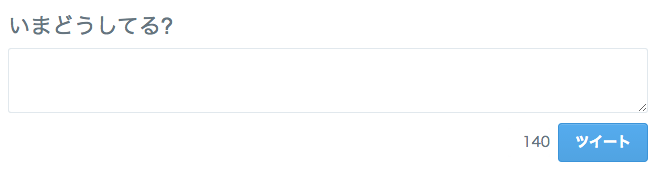
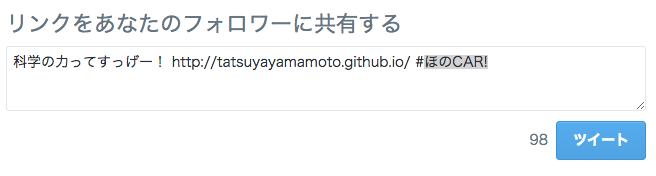

指定の文でツイートを共有する(Twitter Intent)
ツイッターへのリンク(ボタン)だったり、任意のツイートをhtmlに埋め込むものはツイッターアカウントがあればすぐにそのタグやらが見つけられますが、、
予め指定した文やハッシュタグを相手にツイートさせるには・・・？
Twitter Intentというものを利用するらしいので、それをまとめて起きます。
Twitter Intent
https://twitter.com/intent/tweet
このURLで

このようなページも、
色々付け足すと、

色々変わります。
ツイート文
text=(好きな文)
ハッシュタグ
hashtags=(好きなタグ)
URL
url=(お好きなサイト)
一度に使う
それぞれの間に”&”を付けるだけ！簡単！